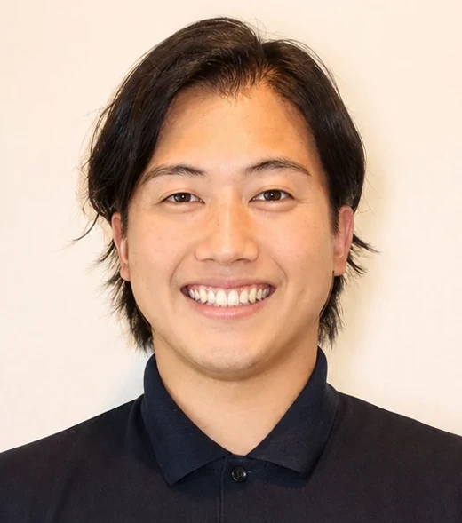

01
料金事例を相談の近くに
15万・20万・33万円の既存事例を漫画より前へ。最低5万円と個別事例の範囲を区別し、詳細に直接移動できるようにする。
確認: 既存金額との一致、詳細リンク、料金要約の到達計測。
SERENSHIA / GROWTH PLAN

特殊清掃LP × Google検索広告 × 見積・成約対応
東京・神奈川の特殊清掃を主軸に、必要工程・総額・担当者・原状回復までの見通しを伝える。既存の信頼材料を活かし、相談から成約までを改善する。
事業数値の追加確認は保留。以下の予算・成約率は条件計算で、業界平均や達成予測ではない。9月の最新広告成績は未取得。
01 / DIAGNOSIS
02 / PRIORITIES
全面刷新ではなく、既存のデザインと実績を使ったセクション改善。
15万・20万・33万円の既存事例を漫画より前へ。最低5万円と個別事例の範囲を区別し、詳細に直接移動できるようにする。
確認: 既存金額との一致、詳細リンク、料金要約の到達計測。
LINE文例を特殊清掃に合わせる。現場地域・状況・現地確認希望を送れるようにし、撮影のための入室は求めない。
確認: CTAと文例の一致、写真任意、既存LINEへの遷移。
立ち会い不要・鍵の預かり・写真報告など、既存の対応範囲を簡潔に整理。未確認の保険申請代行や保証は追加しない。
確認: 現行サービスの範囲内、問い合わせの識別。
電話・LINEを案件IDでまとめ、有効相談・見積提示・契約・キャンセルを分ける。広告費だけでなく、受注利益を確認する。
確認: 二重計上なし、流入別集計、問い合わせ発生月別の成約率。
03 / UNIT ECONOMICS
広告クリックから有効問い合わせへの率と、その問い合わせから成約への率を分ける。
設定予算で目標達成に必要な有効問い合わせCVR: 16.5%。
数式: 広告費 ÷ CPC × 有効問い合わせCVR × 成約率。必要件数は表示上切り上げ、広告費は丸め前の期待値で計算。クリックを増やした際のCPC上昇や契約までの時間差は含まない。
| 成約率 | 必要有効相談 | 有効CVR4%の広告費 | 有効CVR6%の広告費 |
|---|---|---|---|
| 30% | 100件 | 137.5万円 | 約91.7万円 |
| 40% | 75件 | 約103.1万円 | 約68.8万円 |
| 50% | 60件 | 82.5万円 | 55万円 |
| 60% | 50件 | 約68.8万円 | 約45.8万円 |
採算の判断: 許容受注CPA = 1件の限界利益 − 受注1件に配賦した営業費 − 残したい利益。失注した見積・現地調査の費用も含める。約69〜103万円は仮定条件での比較額であり、即時増額の提案ではない。
04 / MARKET
各社の公開訴求を比較。実際の広告費・CPA・成約率・シェアは未確認。
| 競合 | 公開訴求の軸 | 価格・導線 | セレンシアが強める点 |
|---|---|---|---|
| 特殊清掃いちばん | 警察OB監修、迅速な到着 | 床上5万円〜、電話・LINE・フォーム | 担当者と見積範囲の具体性 |
| 武蔵シンクタンク | 地域の専門性、24時間対応 | 料金目安、買取相殺の案内 | 地域・状況別に相談しやすい情報 |
| アイコム | 原状回復から事故物件買取まで | 電話・フォーム、買取サイト | 清掃後の課題までの対応範囲 |
| ブルークリーン | 技術・品質の根拠、衛生復旧 | 地域・工期・金額付き事例 | 消臭結果と完了確認の説明 |
| 特殊清掃ネクスト | 専門認定、年中無休、即対応 | 床上33,000円〜などの作業別料金 | 単価と全工程総額の違いを説明 |
2026年9月7日の調査。自社表示の比較であり実際の品質や到着を保証するものではない。武蔵シンクタンク・アイコムの一部情報は検索取得で直接ページ取得が不成立。作業別単価と総額は同じ条件の価格ではない。
空室期間、近隣への説明、所有者への報告が判断材料。工程別の見積と現地確認予定、写真報告を示す。既存法人ページを活かし、紹介ルートを広告と別に育てる。
「いつ相談できるか」「何にいくらかかるか」を明確にする。必要書類を整理できる体制は検討対象だが、保険適用は契約と保険会社の判断による。
警察庁の2025年統計は自宅で死亡した一人暮らしの者76,941人。特殊清掃の発注数・検索件数ではなく、この人数から自社の30成約を予測しない。
05 / ACQUISITION & SALES
以下は入稿準備案。現在配信中の広告文の実物は未取得で、配信変更済みとは扱わない。
tokuso-serenshia.com
東京・神奈川の特殊清掃
最短即日で現地確認
孤独死・事故現場の臭い・汚染に対応。近隣に配慮して対応します。電話9時〜21時、LINEは24時間受付。
tokuso-serenshia.com
特殊清掃の費用を相談
作業内容と見積りをご説明
現場の状況に合わせて必要な作業をご案内。写真がなくても相談可能。無料見積りからご相談ください。
tokuso-serenshia.com
大家・管理会社様の特殊清掃
立ち会い不要で対応
特殊清掃から原状回復まで一括相談。鍵のお預かりにも対応。東京・神奈川の現場をご相談ください。
一般遺品整理グループの停止とCPC上限650円は維持。競合指名・費用負担の語は一括除外せず、相談内容と成約で評価する。
06 / ROADMAP
30成約の達成期限を保証する工程表ではなく、施策と判断条件を定めた計画。
LP料金・LINE導線、計測の確認。広告取得と月・日予算の照合。
条件: 計測欠測を0件とせず、公開QAを通過。
検索意図別に有効相談、見積化、成約、失注理由を記録。
条件: 同じ問い合わせ集団の成約率を把握。
管理会社向けの小規模検証。許諾済み事例と紹介先候補を整理。
条件: 母数・受注CPA・案件利益を確認。
追加需要・利益・見積と施工余力が成立する範囲へ配分。
条件: 予算承認と成熟した成約実績。
施工能力の例: 月22日、現場に割ける割合80%なら、1件平均2班日の案件を月30件処理するには約4班が必要。現場難易度・人数・移動・見積担当の実態に置き換える仮定であり、現在の必要人数の断定ではない。
07 / DELIVERY STATUS
| 対象 | 状態 | 完了条件・制約 |
|---|---|---|
| 競合・LP・広告の分析 | 完了 | 既存レポートと公開情報を調査。独立レビュー済み。 |
| 料金・LINE・法人導線の改善 | 実装・検証中 | ビルド、スマホ・PC、イベント、独立QAを確認して公開。 |
| このHTML計画書 | 作成済み | 条件別試算、出典、実施範囲を整理。広告LPには掲載しない。 |
| 広告案・成約管理台帳 | 作成済み | 運用用CSVを別添。実績データや送信済み広告ではない。 |
| 広告アカウントの設定変更 | 認証失効・未変更 | 接続確認で invalid_grant を再現。広告案は作成済みだが、設定・予算・配信は変更していない。 |
| 広告予算の増額 | 保留 | 事業数値の追加確認は保留。予算上限を推測で変更しない。 |
| 月30成約の達成 | 未検証 | 実際の契約・利益・キャンセルで確認。実装完了と区別する。 |
08 / EVIDENCE
作成: 2026年9月8日 / P-9・セレンシア専用 / 調査基準日: 2026年9月7日。数字は確定した実績と仮定を分けて記載。広告費・成約率・掲載内容は状況に応じて更新する。